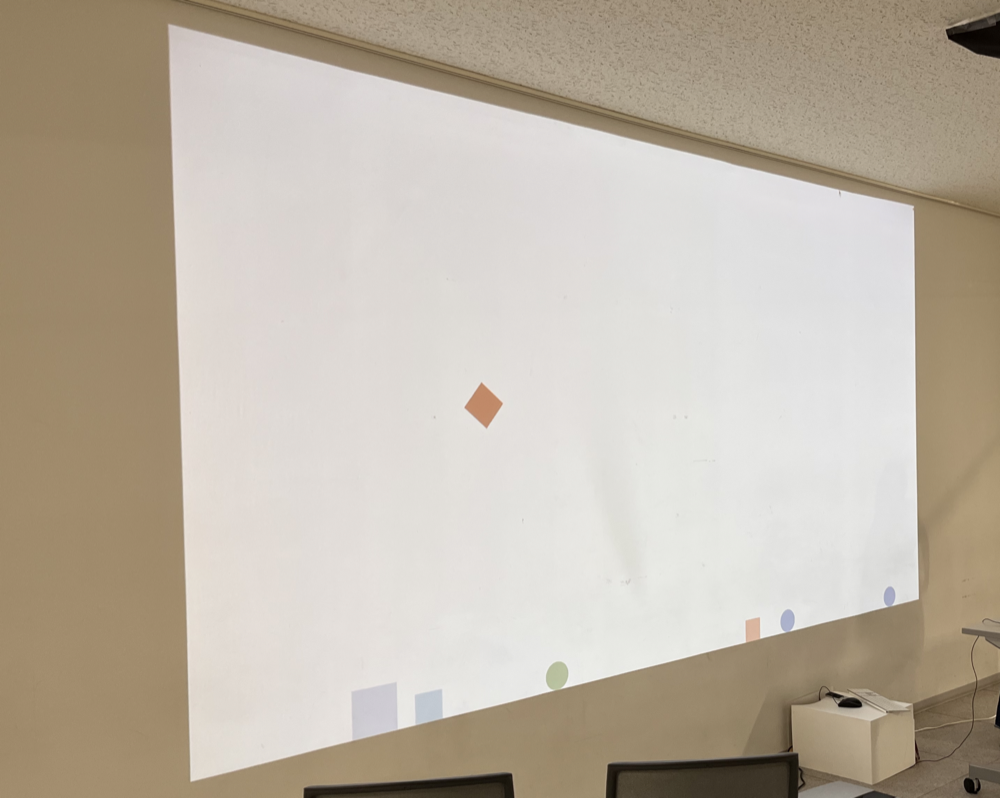
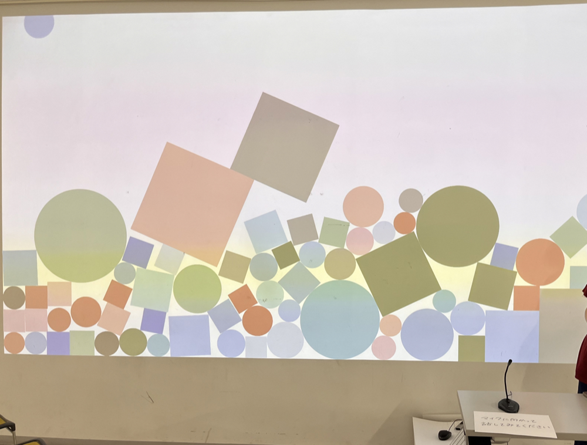
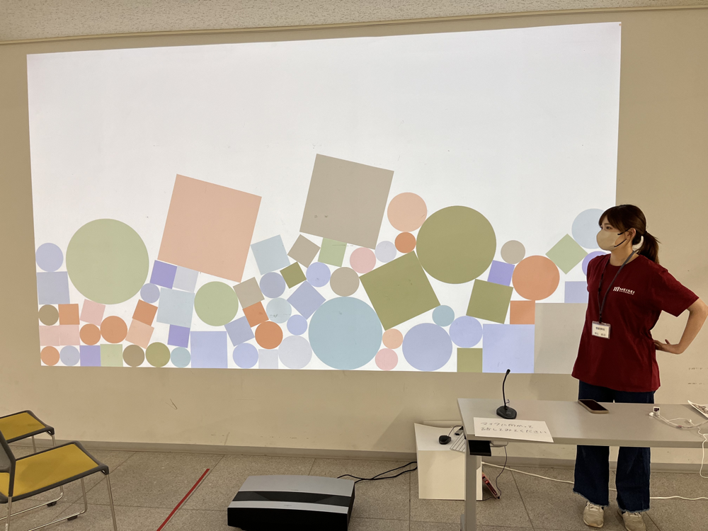

Sounds Drop

Technology
- Processing
- プロジェクション
- マイク
- BOX2D
周辺の音をマイクで集め，ディスプレイ内へ落とし，積層させていく作品。
図形の大きさは周辺の音の大きさと対応している。
声などの音は発された瞬間からその場へ煙のように，発散されてしまう。その声を落とし，積層させることで，直近にその周辺で起きた出来事などを想像することができる。
小さい図形が溜まっていれば通行人が多数いたことを想起し，大きな図形があれば盛り上がった会話があったことを想起することができる。
本作品は明星大学オープンキャンパスのために制作され,学内28号館3階の廊下で展示された。

